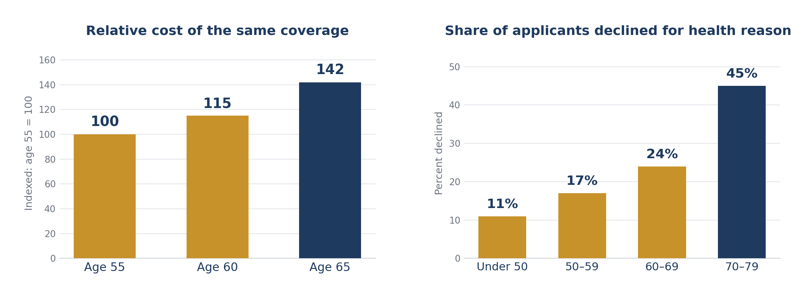

Long-Term Care Planning
Independent, carrier-neutral analysis by Withbert (Bert) W. Payne, CPA, CGMA, FCA
Whether your concern is rising premiums, protecting your family, or preserving your independence, one fact remains constant.
Long-term care planning is most effective when it is done while you still have the greatest number of choices.
Of all the financial decisions people postpone, long-term care planning is among the most costly to delay. Unlike retirement saving, where a late start can be partly offset by contributing more, the consequences of waiting here compound in two directions at once — and one of them can become permanent.
The best time to plan was years ago. The next best time is today.

The pattern is more important than any single number. The same coverage bought at 65 rather than 55 commonly costs materially more every year for the life of the policy — and roughly one applicant in four is already being declined by their sixties. By the seventies, it is closer to one in two. Cost is the visible penalty for waiting. Insurability is the one that cannot be undone.
Four Facts Worth Remembering
Sources: U.S. Department of Health and Human Services (ASPE); Administration for Community Living; CareScout 2025 Cost of Care Survey, San Francisco area.
Many successful families tell me the same thing:
“We can afford long-term care.”
Perhaps.
But writing a check is not the same as having a plan. A care event does not arrive as an invoice. It arrives as a decision — and the decisions come faster than most families expect.
The real questions are:
Money pays the bill. Planning protects the family.
Long-term care planning is often mistaken for nursing-home planning. It is not. It is about preserving comfort, independence, and choice for as long as those are possible. A facility is the last step, not the goal — and there is a great deal of life between remaining at home and that last step. Before any funding question is worth asking, every plan should answer three things, in this order:
A spouse, adult children, and professional caregivers each play a different role. Are they able? Are they willing? What will it ask of them?
Most people want to remain at home as long as they can. Aging in place is the objective; the plan exists to protect it for as long as possible.
Only once the first two are settled does funding become a real decision tied to a real goal.
Only after those questions are answered should insurance be discussed.
Not every family needs insurance to fund care. But families who could comfortably write the check often still choose to insure the risk, for reasons that have little to do with affordability:
Properly structured, a plan of this kind is not simply an expense. It repositions capital you already hold — which is why an independent review is worth having even when the answer turns out to be that you do not need coverage at all.
Based on hundreds of client reviews, the most favorable planning window generally falls between ages 50 and 64.
Best pricing and the widest range of options. Health qualification is usually straightforward, and inflation protection has the longest period in which to compound.
Still an excellent planning window. Premiums are higher than at 50, but the difference is not yet dramatic, and most health conditions can still be accommodated.
Urgency increases. Pricing rises more steeply and some carriers begin to limit their appetite for new applicants at these ages.
Fewer options and more underwriting challenges. Asset-based and hybrid designs may still make sense, but traditional coverage becomes progressively harder to obtain.
Long-term care planning is not about predicting whether you will need care. It is about preserving your independence, protecting your family, and retaining choices while you still have them. Whether you ultimately insure the risk or choose another funding strategy, the most important decision is to create a plan before circumstances create one for you.
Complimentary · No Obligation
Your review is prepared personally by Withbert (Bert) W. Payne, CPA, CGMA, FCA — independent, carrier-neutral, and complimentary.
Request a Complimentary ReviewAlready own a policy? Call (925) 708-6501 for a complimentary review.
This is a solicitation for insurance. This material is for informational purposes only and does not constitute personalized insurance, legal, or tax advice. Insurance products and availability vary by state. Coverage is subject to medical underwriting and policy availability. Policy illustrations and hypothetical results are illustrative only and are not guarantees of future performance; results will vary based on individual health, age, carrier underwriting, policy design, and duration of care. Benefits are generally income-tax-free; consult your tax advisor regarding your circumstances. Withbert W. Payne is a licensed insurance broker in California (CA License No. 0E90257). © 2026 Insurance Review Services · LTCCPAs.com. All rights reserved.